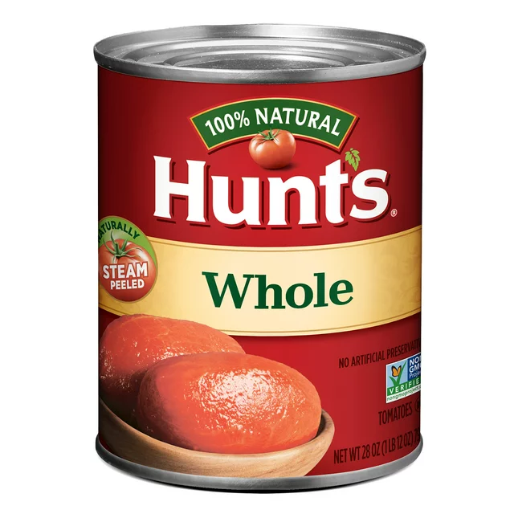
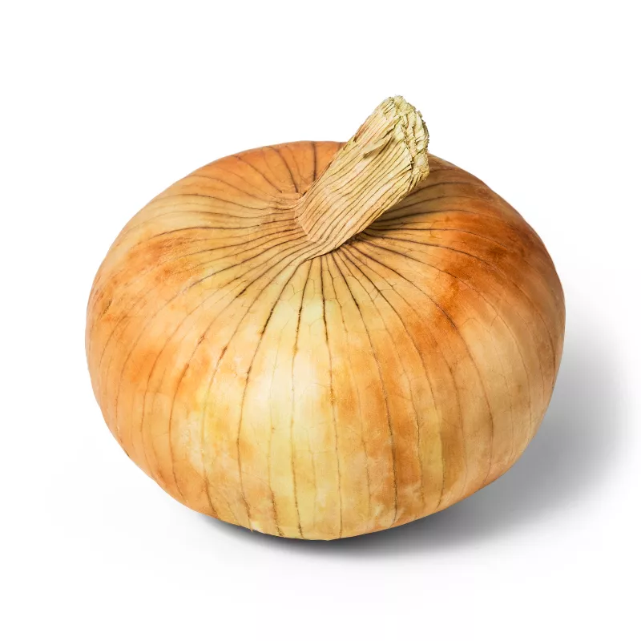
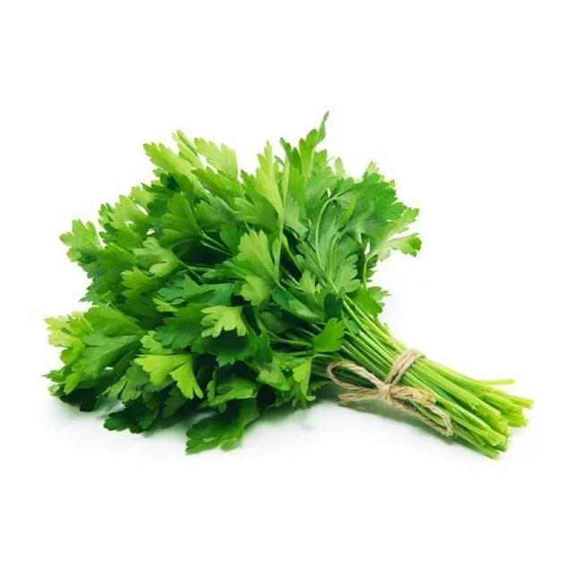
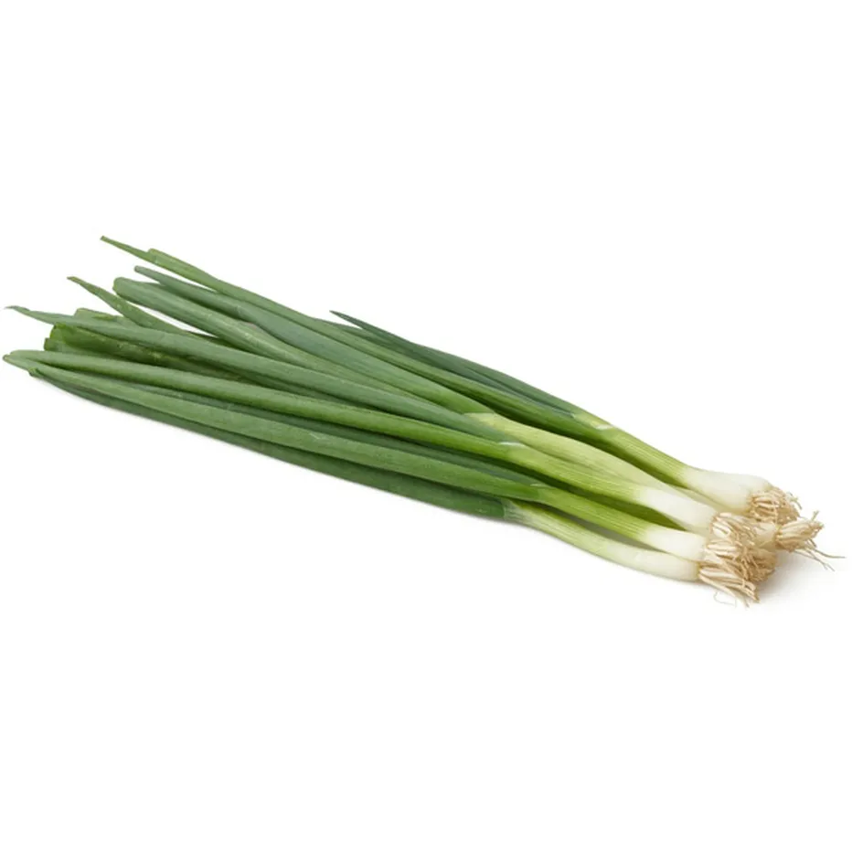
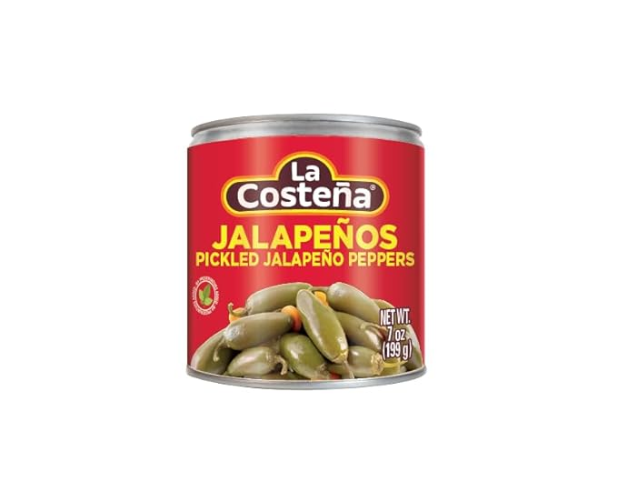
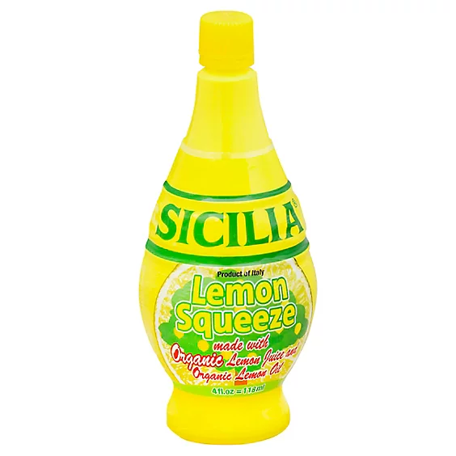
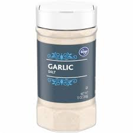

Lamp Salsa
Ingredients
-
2 large cans of whole, steamed tomatoes. 
-
1 large sweet onion 
-
1 bunch of cilantro 
-
1 bunch of green onions 
-
1 small can of jalapenos 
-
1 small bottle of lemon juice 
-
2 tablespoons of Kroger brand garlic salt 
Directions
-
Open the tomato cans and place the contents into a large bowl.
-
Rough chop all of the vegetables.
-
Open the jalapenos and dump all of the liquid into the bowl. Add jalepenos to taste.
-
Add vegetables to bowl and with a hand blender, blend until salsa.
-
Add garlic salt to taste.